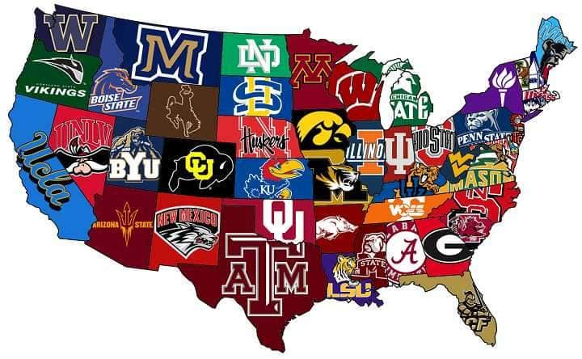

Guide to US educational institution
USမှာဆိုရင်ဖြင့် တက္ကသိုလ်ပညာရေးအတွက်ကျောင်းတွေကတော့ ကောလိပ်တွေ တက္ကသိုလ်တွေအပါအ၀င်ဖြင့် 4500နီးနီးကိုရှိပါတယ် USမှာတက်ချင်ရင်တော့ usမှာအဲလောက်တက္ကသိုလ်များကြီးရှိတာဆိုတော့ ဘယ်ဟာက ကိုယ်နဲ့ပိုလိုက်ဖက်မလဲဆိုတာကို သိဖို့ဆိုရင်အရင်ဆုံး typesတေအကုန်လုံးကိုစမ်းစစ်ကြည့်ရမယ်ပေါ့နော် ကိုယ်က တက်တဲ့လူနည်းပြီး tight-knitဖြစ်တဲ့ communityရှိပြီး city lifeမခံစားရတဲ့ college townလေးမှာတက်ချင်တာလား ဒါမှမဟုတ် လူတွေတောတော်များများနဲ့တွေ့ရပြီး city lifeအပြည့်အ၀ခံစားရမယ့် universityကြီးလားဆိုတာမျိုးပေါ့ ကဲ...အဲတာဆို ဘယ်လို typesလေးတေရှိလဲဆိုတာကြည့်ရအောင်
1.Public universities
ဒီလို Uni တွေက သူတို့ပြည်နယ်ပိုင်တွေဖြစ်ပြီး state uniလို့ လည်းခေါ်ပြီး အဲဒီ ပြည်နယ်ရဲ့governmentကကောက်တဲ့ sale taxes, income taxes, property taxesတေရယ် တခြားသော အခွန်ပေါင်းစုံနဲ့ runရတာပါ ပြီးတော့လည်း international studentsတေဆိုရင် ပုံမှန် tuition feesထက်ကို ပိုပေးတက်ခိုင်းပါတယ် ဒါမဲ့ အဲ tuition feesက private uniတေရဲ့နှုန်းလောက်တော့မများပါဘူး များသောအားဖြင့် public uniတွေက need aware admissionသွားပြီး international studentsများကို financial aid ပေးတာ မရှိသလောက်ရှားပါတယ် local resident studentတွေရယ် us citizensတေပဲ public uniတေမှာ အခွင့်အရေးပိုရပါတယ် international studentတွေက ကိုယ့်စရိတ်နဲ့ကိုယ်ပဲ လာတက်ရတာပါ
Public Universityတွေထဲက နာမည်ကြီးတာလေးအချို့ကိုဖော်ပြပေးထားပါတယ်
1.The University of Texas
2.The University of Michigan
3.The University of California
4.California State University
5.Pennsylvania State University
2.Private University
ခုပုဂ္ဂလိကတက္ကသိုလ်ပေါ့နော် private uniတွေကတော့ အစိုးရထောက်ပံ့မှုနဲ့ရပ်တည်နေတဲ့ uniမဟုတ်ဘဲ သူတို့က ရန်ပုံငွေတွေကို alumniတွေရဲ့donationတွေ studentတွေဆီကtuition feesရယ် research grantsတွေကနေ ရပြီး သီးခြားရပ်တည်ကြတယ်ပေါ့ ဒါပေမဲ့လည်း သူတို့က public fundingအနေနဲ့အစိုးရကထုတ်ပေးတဲ့ student loansတေ grantsတေဆီကလည်းရပါသေးတယ် ဒီလို uniတေရဲ့ tuitionစရိတ်ကတော့ publicတွေထက်ပိုများပေမယ့်လည်း tuition feesကတော့ international studentပဲဖြစ်ဖြစ် residentတေပဲဖြစ်ဖြစ် စျေးကတော့တူတူပဲဖြစ်ပါတယ် လျှော့ပေးရတာ ပိုပေးရတာတွေမရှိပါဘူး ဒါပေမဲ့လည်း us citizensတွေကပဲ federal work study programတွေနဲ့ အခွင့်အရေးပိုရနေပါသေးတယ်
လူသိများPrivate Universitiesတစ်ချို့ကတော့
1.Harvard University
2.Stanford University
3.Duke University
4.Massachusetts Institute of Technology
5.Brown University
3.Ivy League Universities
ဒီ Uniတွေကတော့ အမေရိကန်တက္ကသိုလ်တွေထဲကမှ နာမည်အကြီးဆုံးကြီးတွေပဲဖြစ်ပြီး USရဲ့ အရှေ့မြောက်ပိုင်းဒေသမှာပဲရှိကြပြီး Universities ၈ခုပဲဖြစ်ပါတယ်
အဲဒီ uniတွေကတော့ undergraduateကိုfocusပြီးမှ liberal artsရယ် တခြားသော professional majorsတွေ graduate ကျောင်းတွေကိုလည်း သူတို့နာမည်နှင့်ပဲရှိပြီးသားပါ အဲလို uniတေကို ၀င်ခွင့်ရဖို့က အင်မတန်မှ ခက်ခဲပြီး tuitionစျေးကလည်း မိုးထောင်တက်နေတဲ့အတိုင်းပါ ဒါပေမဲ့လည်း အဲဒီ Uniတေက endowmentအများဆုံးတွေပဲဖြစ်တာကြောင့် တချို့တွေက need blind admission policyကျင့်သုံးတာရယ် financial aidထောက်ပံ့ပေးတာရယ်မှာ အရမ်းရက်ရောပါတယ် financial aid statementလေးပဲဖြည့်ပေးရုံပါပဲ
Ivy league Universitiesတွေကတော့
Harvard University
Princeton University
Yale University
Columbia University
Cornell University
Brown University
University of Pennsylvania
Darthmouth College
4. Technical schools (နည်းပညာကျောင်း/တက္ကသိုလ်များ)
အဲ့တက္ကသိုလ်တွေကတော့ အင်ဂျင်နီယာ/သိပ္ပံ ဘာသာရပ်တွေကိုအထူးပြုပါတယ် အဲ့လိုကျောင်းတွေကထွက်တဲ့သူတော်တော်များများ သိပ္ပံဘာသာရပ်/ သင်္ချာဘာသာရပ် တွေမှာတော်တော်များများထူးချွန်ကြပါတယ်။ Admin တို့တွေကတော့ အဲ့ STEMဘက်ကိုစိတ်ကူးထဲတောင်မထည့်ထားကြပါဘူး😀 နာမည်ကြီးတဲ့ Technical schools တွေကတော့
1. Massachusetts Institute of Technology (MIT)
2. California Polytechnic Institute
3. Virginia Tech
4. Georgia Institute of Technology
5.Liberal Arts Colleges
ဒီကောလိပ်တွေကတော့ undergraduate levelကို focusထားပြီး သူတို့ဆီမှာ associate degreeရယ် bachelor degreeထိပဲ တက်လို့ရပါတယ် အဲဒီကျောင်းတွေက သိပ္ပံ ၀ိဇ္ဇာ လူမှုရေး ဘာသာရပ်တွေကို ပိုဦးစားပေးပါတယ် ၄နှစ်ထက်ပိုတက်ရတဲ့ Law, medicine and engineering majorsတွေကတော့ မရပါဘူး engineeringအတွက်က သူတို့က universityတွေနဲ့ချိတ်ဆက်ပြီး 3+2 or 2+3 planနဲ့ double majorပေးတက်ပါတယ် လူနည်းစုသင်တာဖြစ်ပြီး များသောအားဖြင့် college locationတွေက city central မှာမရှိဘဲ college townလေးတွေ rural areaလေးတွေမှာတည်ရှိလေ့ရှိပါတယ် များသောအားဖြင့် generallyပေါ့နော် liberal arts collegeတိုင်းကတော့ rural areaမှာရှိတယ်လို့တော့ မဆိုလိုပါဘူး Small classesလေးတွေပဲဖြစ်ပြီး လူနည်းစုပဲဆိုတော့ tight knit communityကြိုက်တဲ့လူတွေဆိုရင် ဆင်ပြေပါတယ်
နာမည်ကြီး liberal arts collegeတချို့ကတော့
1.Williams Colllege
2.Pomona College
3.Swarthmore College
4.Wellesley College
5.Amherst College
ကဲနောက်ဆုံးတစ်ခုကတော့
6. Community Colleges
ဒီကောလိပ်တွေကတော့ Associate degreeအတွက်တက်လို့ရပြီး ၂နှစ်တက် collegeလေးတွေပဲဖြစ်ပါတယ် အဲက graduateတွေကတော့ bachelorအတွက်ကို 2နှစ်ကျန်တာကို တခြား uni or collegeကို transferပြီးတက်လို့ရပါတယ် ပြီးတော့ 4 years degreeအတွက်ကို cheaper optionsတခုလည်းဖြစ်ပါတယ် ဒါပေမဲ့ scholarship financial aidကတော့မပေးပါဘူး ပေးလာမှာလည်းမဟုတ်ပါဘူး ဒီ community collegeတွေက class timetable flexibleလည်းဖြစ်တယ် လူပေါင်းစုံနဲ့တက်ရမယ်ဆိုတော့ backgroundပေါင်းစုံနဲ့တွေ့ရမှာပဲဖြစ်ပါတယ် အဲတာကတချို့အတွက် positiveဖြစ်ချင်ဖြစ်နေပါလိမ့်ပါမယ် အခု negativeရှူထောင့်ကနေ ပြောပါမယ် အဲလို community collegeတွေက permanet residentsတွေက freeတက်လို့ရပြီး လူပေါင်းစုံလာတက်ကြပါတယ် ဆေးသမားတွေဘာညာပေါ့နော်အဲလိုလေးတွေလည်းပါတယ်ပေါ့ ပြီးတော့ community collegeအများစုတက်သူတွေက part time jobတစ်ဖက်နဲ့ အချိန်မီ 2နှစ်နဲ့ graduationမလုပ်နိုင်တာတွေများပါတယ် ဒါကတော့ ကိုယ့်အပေါ်ပဲမူတည်ပါတယ် community collegeတိုင်းတော့ အခြေအနေ မဆိုးပါဘူး
Transfer rateကောင်းပြီး reputationရှိတဲ့ community collegesတချို့ကတော့
1.De Anza College
2.Orange Coast Community College
3.Green River College
4.Santa Monica College
5.College of San Mateo
Spoiler - Need Blind, Need Aware Admission Financial aidအကြောင်းလေးကို နောက် articlesတွေထဲမှာပြောပြပေးသွားမယ်နော်